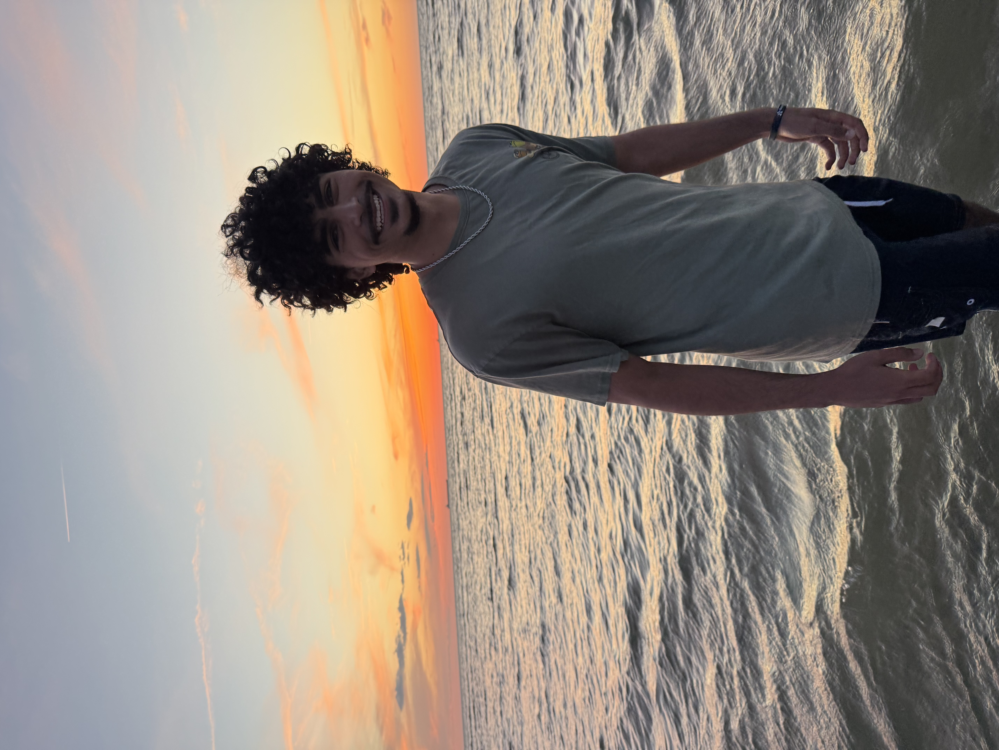

Hello there
I'm Haitham.
An engineering student at the University of Virginia, based in Washington DC and Seattle. I'm a strong believer in "measure twice, cut once," that idea drives a lot of my design process and my life philosophy.

Introduction
I'm a perpetual learner, someone addicted to growth and progress, and building is how I best express that. I'm driven by a fear of regret and a desire for a legacy. This website aims to give you a snapshot of what I hold most valuable and the person I aspire to be.
I currently work at AWS on their Textract team, a machine learning tool that extracts text from complex documents using computer vision. I'm very interested in systems engineering, and particularly in its implications for product management.
Work
-
May 2025 to present
SDE Intern, Amazon Web Services
Working on the Textract team, a machine learning tool that extracts text from complex documents using computer vision. I automated lengthy ticket resolution processes to help on-call team members.
-
Aug 2024 to present
Student, University of Virginia
Studying Systems Engineering with a minor in Computer Science at UVA's School of Engineering.
-
May 2023 to Aug 2023
Research Intern, NASA SEES
Built a machine learning model using ResNet-18 that scanned satellite imagery and classified land cover types automatically. Wrote and published research, one of 200 students selected for AGU Bright StaRS.
Socials


Outside of work
Sports
Watching, playing, commentating, if it has to do with a sport, I'm there.
Nature
I love the outdoors. As a kid I went camping, fishing, and hiking. The quiet of a nice scene is very satisfying to me.
Eating
I'd consider myself a foodie. Follow me on Belli to see what I'm eating.
Building
I like making little side projects and releasing them into the world.
Get in touch
Feel free to reach out by email at: haithama125@gmail.com